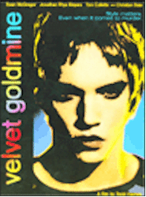

Contents | Features | Reviews | News | Archives | Store |
 |
|
| Movie Credits | Buy It! |
Velvet Goldmine
Review by Gregory Avery
Posted 13 November 1998
|  | Directed by Todd Haynes Starring
Jonathan Rhys Meyers, Ewan McGregor, Screenplay by Todd Haynes; |
In Todd Haynes strangely enjoyable, sometimes intoxicating new film, Brian Slade (Jonathan Rhys Meyers) stares at the audience with a fixed, sullen pout and querulous eyes as he sings baroque rock songs about nothing. He has a smooth, innocuous, newborn quality, like something that has had all the rough edges shaved clean. The mystery, the mystique, the preening, the cagey glamour, the short-cropped hair painted neon blue. It is like staring into a glittering void which, in turn, stares right back at you -- a combination of "What are you looking at?' and "Stare as much as you like, it doesn't matter." Turning their backs on the "hypocritical" flower-children movement, these indolent British "new humans" (to borrow a Japanese term) set out to create their own world, defiant, pansexual, all inclusive. They, of course, end up being just as hypocritical themselves, falling into the nowhere-land of self-indulgence, sundering relationships, burning out quickly. Welcome to the fabulous, wacky early Seventies.
"Glam rock" mostly took hold in the U.K., where many stars rose to prominence, and some fell just as quickly from it with astonishing speed. Most people in the U.S. became familiar with it through David Bowie's incarnation as Ziggy Stardust, the rock star from another planet who burned brightly, then was snuffed out, leaving a beautiful corpse. The character of Brian Slade(which is itself a pseudonym of the character's original name) is clearly inspired by Ziggy, and Haynes gives him his own Iggy Pop-style protege, Curt Wild. Whereas Iggy dripped hot wax on his chest during concerts and whapped himself in the mouth with a microphone until his teeth chipped, Curt (Ewan McGregor, whose long, almost white-blond hair eerily evokes Kurt Cobain) is shown dribbling beer on his naked chest, enveloping himself in a cloud of glitter which sticks to his damp flesh, snakes his hand into his leather trousers, then one-ups Jimi Hendrix by setting the whole stage afire. Brian takes one look at him from afar and is smitten. Later, they perform on-stage together, and Brian happily drops to his knees and fellates the strings on Curt's guitar. Yowza.
Slade is married, to an American girl named Amanda (Australian actress Toni Collette, in her best performance to date), who in-turn affects a Mayfair accent. She, Brian and Curt appear at a televised press conference, where a reporter asks Slade, just who does he like, boys or girls? Slade replies: both. Makes no difference, although, of course, it is.
"That's me! That's me!" says teenaged Arthur Stuart (Christian Bale), jumping to his feet and pointing at Brian on TV, so excited over the shock of recognition that he forgets he's doing it in front of his dowdy, conventional parents. Ten years later, Arthur, the "resident Brit" for a U.S. publication, is called on to do an investigative story on Slade, who had "forbodings" about his being "assassinated" on-stage during the last concert of his 1974 tour. A shadowy gunman does indeed cut down the bird in all his fine plumage. Arthur interviews an older, rueful Amanda and discovers she wasn't informed of Brian's death for 24 hours. How could that happen? "Forgot," she says, with a sick grin and a wave of her hand.
The characters are poseurs, and the film doesn't pretend that they aren't. What the film does do is capture the peculiar sense of exhilaration that occurred when these new, exotic Turks appeared on the scene, and the reaction, fanatical or excoriating, that they inspired from the public. The characters could have come across as stuffed birds, growing dusty and moldy in a museum, but the film has a heady energy to it, a combustion that puts the wild getups and the quick-change relationships into context.
Haynes, showing much greater style and breadth after his two previous films, Poison and the much underrated Safe, artfully plays with the medium, springing elements of fantasy and expressionism upon us; he turns the movie into a musical at times, and stages a marvelous pre-music video rendition of one of Slade's songs. The growing infatuation between Brian and Curt is played out like a carnival ride, culminating in the longest, close-up man-man kiss I can recall ever seeing. (People in search of more sedate entertainment should turn their attention to Antz.)
The picture is a romp, and a hoot, not just in terms of fashion but also in how it makes some pungent comments on the characters, their cultural movement, and on the film itself. (One scene is played out in the style of Haynes notorious, now-suppressed "Superstar", where the story of Karen Carpenter is re-enacted using Barbie dolls.) The film isn't entirely fun and games: Haynes drops his little vial of meaning into the waters. Brian Slade has an alter ego, Maxwell Demon (whose album, "The Ballad of Maxwell Demon", with an ivory-white Slade/Maxwell posed as if he were Debussy's "Faun" on the cover, is Arthur's introductory point to Slade's music), and he gets rid of him in much the same way Bowie dropped Ziggy Stardust. (Bowie, without any advance notice, informed a Japanese audience that he and his band were not only performing the last concert on their tour, but also "the last concert that we will ever give".) Slade's later resurrection resembles a dour commentary on Bowie's "mainstream" emergence in the first half of the Eighties, which landed him on the cover of "Time" magazine, while causing concern among his fans that he was trading in his audacity for commercial success.
Haynes sees audacity as something that -- literally, in the film anyway -- falls from the stars, a rare thing. It is something that should be carefully tended, to keep life from becoming completely conventional and devoid, a life depicted in the film as having armored policemen lurking just on the parameter and ruled over by a "President Reynolds" (as in Reynolds Wrap, something that's shiny, tinfoil, and keeps things warm). The film may seem at first look like a whirl (Haynes trimmed over 20 minutes from it after it premiered at the Cannes Film Festival last May), but it extends the director's ongoing concern with identity, even if, as Slade's Brian Epstein-like manager Cecil (Michael Feast) says, the main character is walking "hand in hand with a lie". The rock performers in the early Seventies, and their audience, knew that artifice was the medium and the message; it was expression, whether it be revolt or pleasure or something else entirely, that was important, that fueled a dialogue between musician and listener, that kept things shook-up instead of staid, that made music exciting instead of background ambience, that gave or created personality in many different forms, that provided commentary, good times, or introspection, sometimes all at once. Slade is seen as running away from his identity; Arthur is seen as gradually defining his. The person that you think is the film's hero turns out to be someone else entirely. While Haynes' evocation of "glam rock" is enjoyable mostly for its energy, puckishness, playfulness, and fun, it also has its legitimate points underneath, deeper tones circulating within the cavalcade.
Contents | Features | Reviews | News | Archives | Store
Copyright © 1999 by Nitrate Productions, Inc. All Rights Reserved.